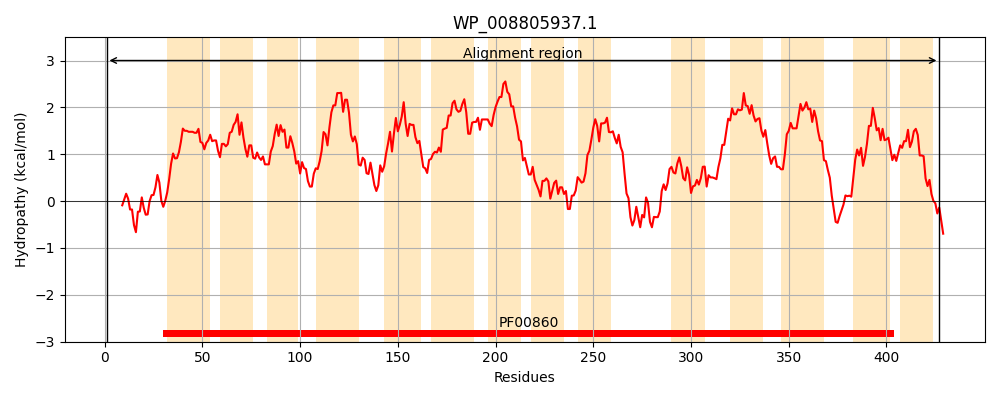
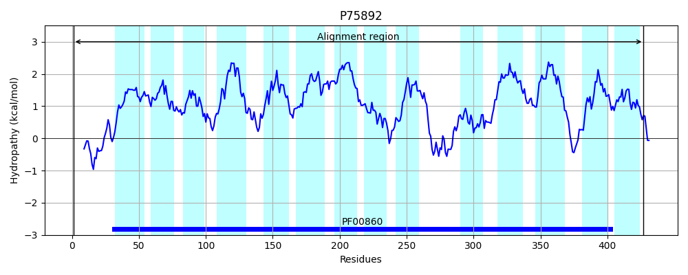
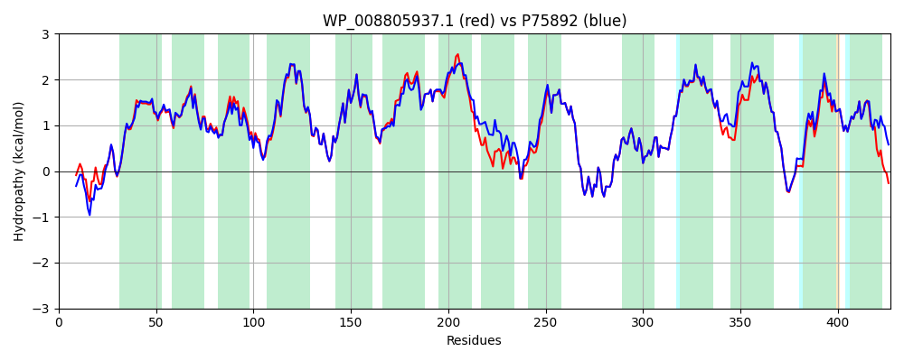

Hit Accession: P75892
Hit TCID: 2.A.40.1.3
Hit Description: gnl|BL_ORD_ID|11422 gnl|TC-DB|P75892|2.A.40.1.3 Putative pyrimidine permease rutG - Escherichia coli (strain K12).
Mach Len: 427
e:0.000000
Query TMS Count : 14
Hit TMS Count: 14
TMS-Overlap Score: 13.650000
Predicted Substrates:CHEBI:8675;pyrimidine
BLAST Alignment:
Score: 1916 , Bit scores: 742 bits, E-value: 0.0e+00, Alignment length: 427, Percentage identity: 88
Query: 1 MALFDFPRWKLTSPAAESGVVAPDERLSAGQTLVMGVQHAVAMFGATVLMPLLMGLDPNLSILMSGVGTLLFFVVTGGRVPSYLGSSAAFVGVVIAITGFNGQGLNPHLSVALGGIIACGLVYTLIGLVVMKIGTRWIERLMPPVVTGAVVMAIGLNLAPIAVRSVSASAFDSWMAVLTVLCIGIVAVFTRGMLQRLLILVGLIVACALYALLANGFGLGKPLDFSPLAQAAWFGLPHFTTPSFNGQAMMLIAPVAVILVAENLGHLKAVAGMTGRNMDPYMGRAFVGDGLATMLSGSVGGSGVTTYAENIGVMAVTKVYSTLVFVAAALIAMLLGFSPKFGALIHTIPGPVIGGASIVVFGLIAVAGARIWVQNRVDLSQNSNLIMVSVTLVLGAGDFALSLGGFTLGGIGTATFGAILLHALLHR 427
MA+F FP W+L S + ESGVVAPDERL QT VMGVQHAVAMFGATVLMP+LMGLDPNLSILMSG+GTLLFF +TGGRVPSYLGSSAAFVGVVIA TGFNGQG+NP++S+ALGGIIACGLVYT+IGLVVMKIGTRWIERLMPPVVTGAVVMAIGLNLAPIAV+SVSASAFDSWMAV+TVLCIG+VAVFTRGM+QRLLILVGLIVAC LY ++ N GLGK +DF+ ++ AAWFGLPHF+TP+FNGQAMMLIAPVAVILVAENLGHLKAVAGMTGRNMDPYMGRAFVGDGLATMLSGSVGGSGVTTYAENIGVMAVTKVYSTLVFVAAA+IAMLLGFSPKFGALIHTIP VIGGASIVVFGLIAVAGARIWVQNRVDLSQN NLIMV+VTLVLGAGDFAL+LGGFTLGGIGTATFGAILL+ALL R
Sbjct: 1 MAMFGFPHWQLKSTSTESGVVAPDERLPFAQTAVMGVQHAVAMFGATVLMPILMGLDPNLSILMSGIGTLLFFFITGGRVPSYLGSSAAFVGVVIAATGFNGQGINPNISIALGGIIACGLVYTVIGLVVMKIGTRWIERLMPPVVTGAVVMAIGLNLAPIAVKSVSASAFDSWMAVMTVLCIGLVAVFTRGMIQRLLILVGLIVACLLYGVMTNVLGLGKAVDFTLVSHAAWFGLPHFSTPAFNGQAMMLIAPVAVILVAENLGHLKAVAGMTGRNMDPYMGRAFVGDGLATMLSGSVGGSGVTTYAENIGVMAVTKVYSTLVFVAAAVIAMLLGFSPKFGALIHTIPAAVIGGASIVVFGLIAVAGARIWVQNRVDLSQNGNLIMVAVTLVLGAGDFALTLGGFTLGGIGTATFGAILLNALLSR 427 | Protein Hydropathy Plots: |
|---|
|  |  |
Pairwise Alignment-Hydropathy Plot:
|
|---|
|  |